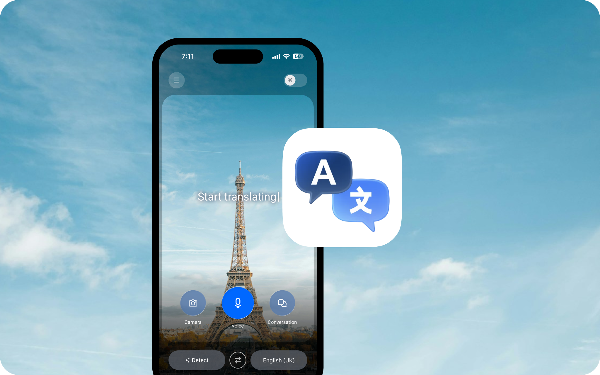
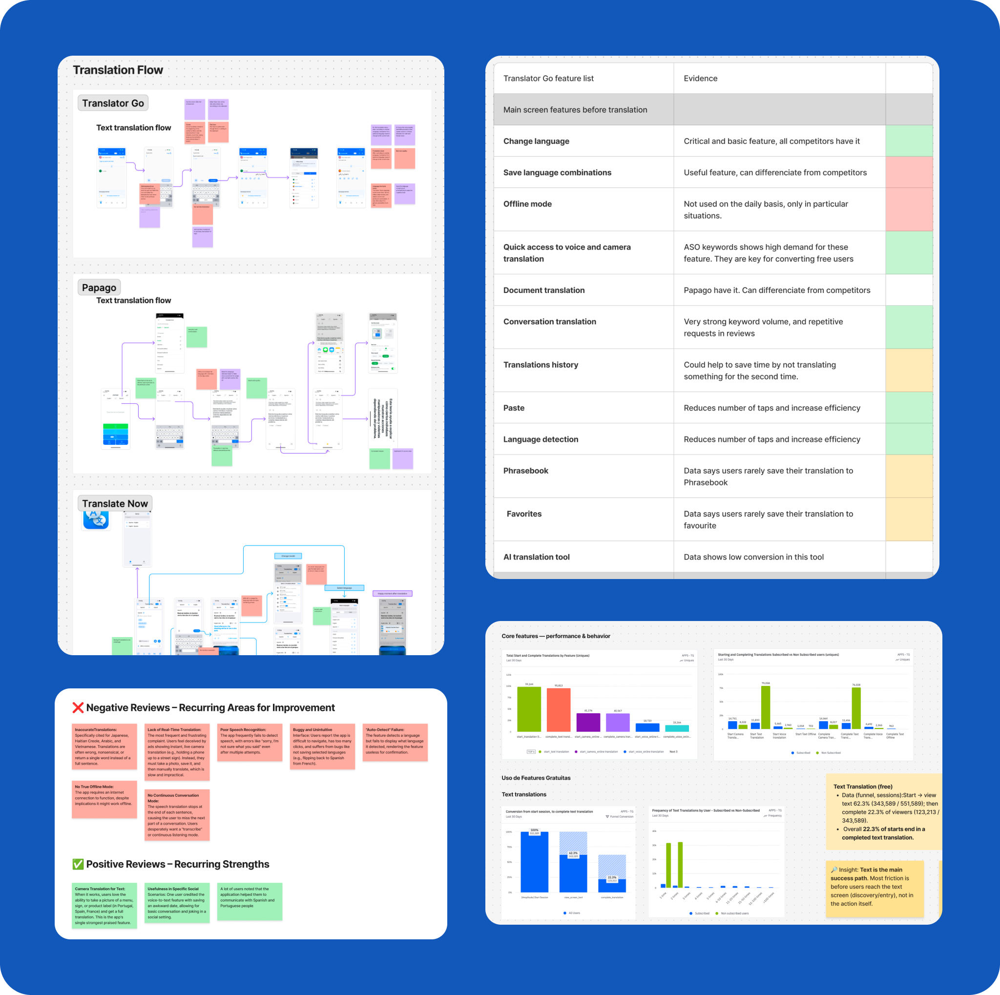
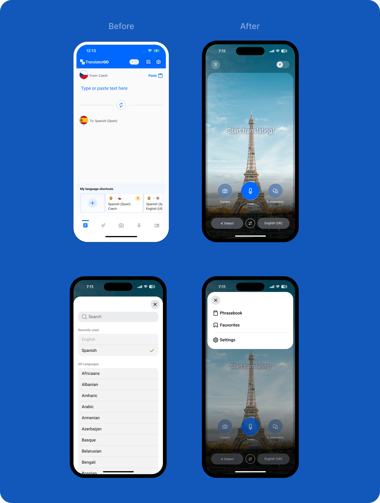
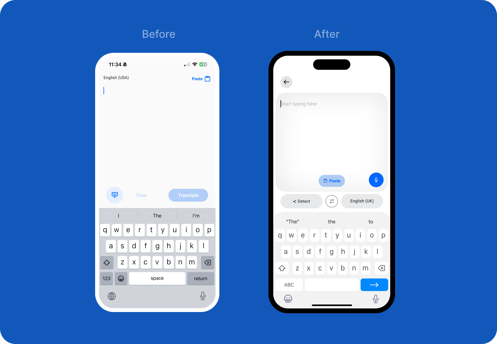
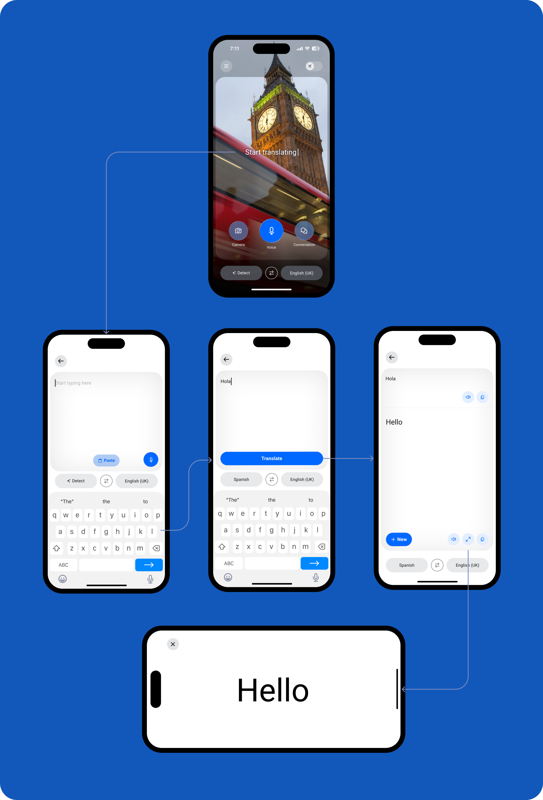
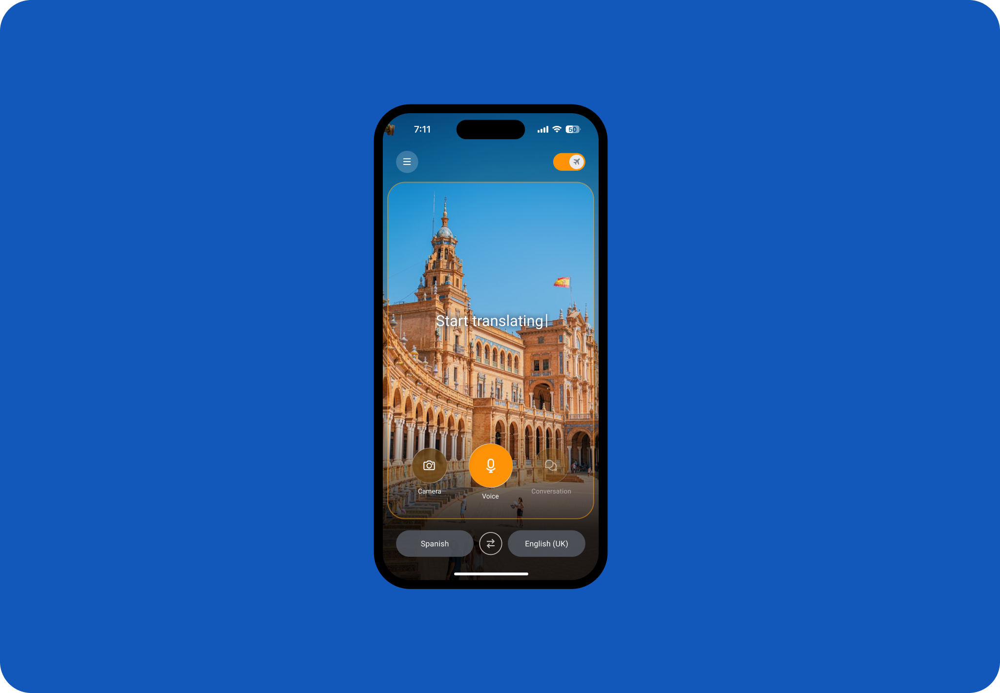
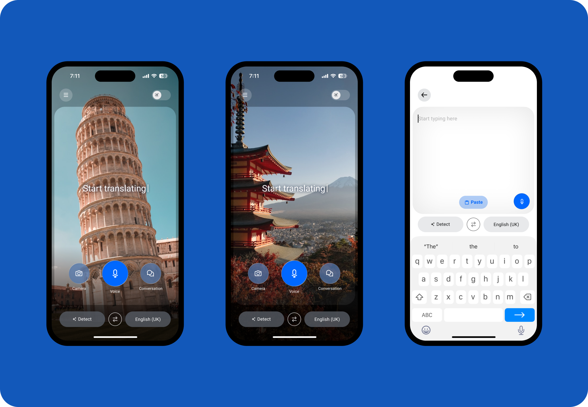

TranslatorGo
Мобільний застосунок для перекладу тексту, голосу та зображень на понад 110 мов. Застосунок орієнтований на мандрівників і людей, які регулярно стикаються з мовними бар'єрами.

Моя участь
ASO Keywords analysis, Benchmark, Amplitude data analysis, Opportunity prioritisation, Prototypes, UI design
Команда
4 людини, включаючи PO та PM
Головна задача
Підвищити коефіцієнт конверсії та сформувати довіру до продукту з перших секунд використання.
Рішення
Провівши аналіз даних Amplitude, я визначив, що більшість користувачів купують підписку саме після проходження Text to text флоу. Тож рішенням було оптимізувати шлях який користувач проходить для отримання якісного і швидкого перекладу і як результат наблизити його до оформлення підписки.
Дослідження
Після аналізу конкурентів, запитів в AppStore та аналізу кількісних даних я сформулював та зробив пріоритизацію рішень, які допомогли покращити кількісні показники.

Стартовий екран
Проблема
Користувачі повідомляють, що додатком важко користуватися, потрібно зробити багато кліків щоб дістатись до конкретної функції і він страждає від помилок.
Рішення
Зменшив когнітивне навантаження, сконцентрувавши увагу користувачів на основних можливостях додатку та сховавши другорядні функції. Наприклад: прибрав блок мовних комбінацій які займали багато корисного місця. Збереження мов відбувається автоматично.
Інсайт
З запитів App Store та аналітики можна побачити високий попит на голосовий переклад а також переклад за допомогою камери.
Рішення
Зробив великий акцент на ці головні функції, вони також допоможуть конвертувати користувачів в підписників.
Інсайт
В той же час дані показують що користувачі рідко зберігають переклади в Розмовник або додають їх до обраного.
Рішення
Цей функціонал було вирішено сховати в бургер-меню щоб не перенавантажувати головний екран.
Проблема
Деякі користувачі скаржилися на незручне користування додатком під час руху.
Рішення
Перемістив вибір мови вниз екрану, щоб зробити його зручнішим для використання однією рукою.

Процес перекладу
Проблема
Повернення назад чи новий переклад відбувалося за допомогою натисканню піктограми приховати клавіатуру в нижній частині екрана. Це неочевидна дія, оскільки користувач може подумати, що вона просто приховує клавіатуру, але не повертає на попередній екран.
Рішення
Зробив більш стандартний та зрозумілий спосіб закрити поточний переклад або запустити новий — за допомогою посилання в верхній навігаційній панелі.
Проблема
Кнопка Paste відображається навіть тоді коли в буфері обміну порожньо.
Рішення
Показувати кнопку Paste тільки у випадку якщо користувач має скопійований текст в буфері обміну.
Також з'явилась опція додати текст за допомогою голосу — на випадок, якщо користувач вирішив скористатися цією функцією йому не доведеться повертатися на стартовий екран.

Повний флоу перекладу. На екрані з результатом внизу додав кнопку при натисканні на яку можна швидко почати новий переклад.

Режим офлайн
Коли зникає інтернет, офлайн-режим вмикається автоматично. Його також можна увімкнути самостійно, наприклад, якщо вам потрібно зекономити трафік закордоном. Якщо він активний то інтерфейс змінює колір деяких елементів, показуючи візуально що деякі функції додатку будуть обмежені. Наприклад, список мов буде обмеженим а режим синхронного перекладу недоступним.

Візуальне оновлення
Проблема
Ринок утиліт переповнений схожими рішеннями, які важко відрізнити між собою. Користувачі очікують сучасного та преміального досвіду від продукту, за який платять.
Рішення
Дизайн зосереджений на ключових функціях — без зайвого візуального шуму. При кожному відкритті додатку користувач бачить унікальне зображення місця, пов'язаного з обраною мовою, — це створює відчуття живого, а не шаблонного продукту.

Результати
- На 10% виріс коефіцієнт конверсії зі звичайних користувачів до тих які купили підписку.
- Збільшилася частотність перекладів на одного користувача за сеанс.
- Через 30 днів після редизайну спостеріглась позитивна динаміка повернень до додатку.